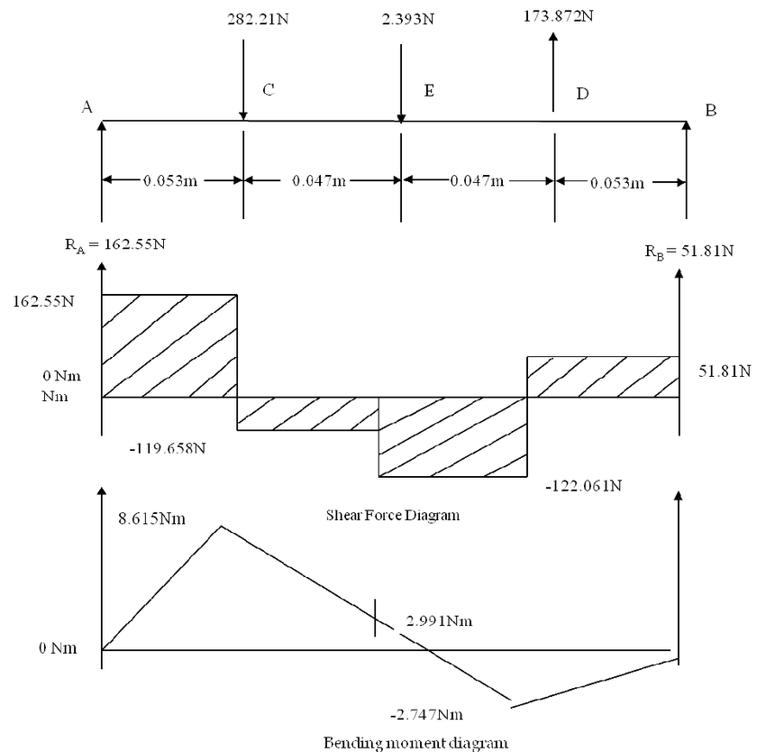
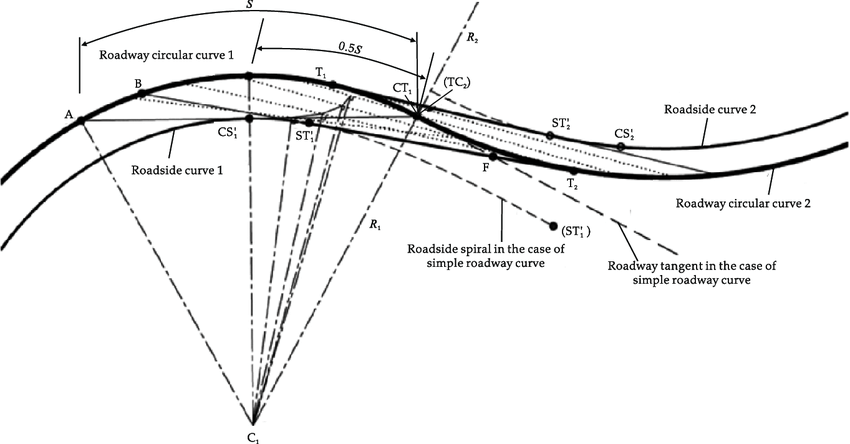
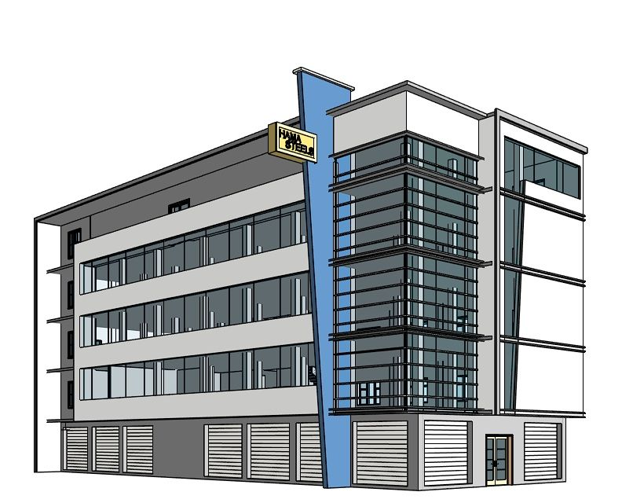
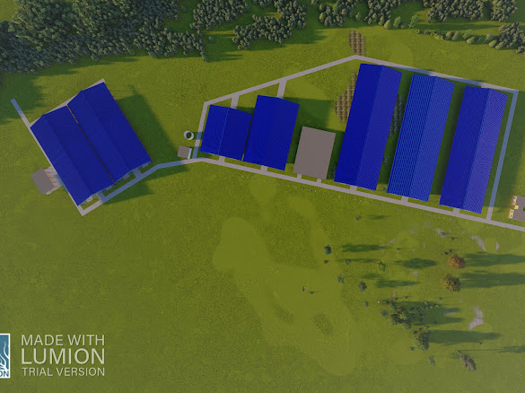
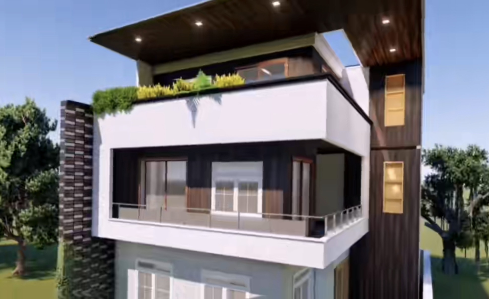
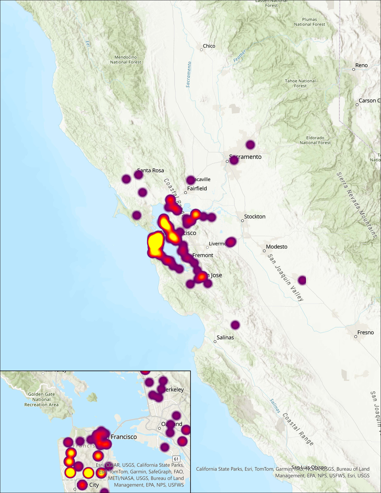

Assistant Civil Engineer
Documented site conditions, supported SAP2000 modeling, prepared quantity takeoffs and coordinated constructability questions with contractors.


Civil + structural engineering · San Francisco, CA
I develop structural models, drawings and field documentation that turn complex constraints into clear, buildable systems.
Career under construction
Current chapter 2020 / Civil engineering

Documented site conditions, supported SAP2000 modeling, prepared quantity takeoffs and coordinated constructability questions with contractors.
Built a foundation in structural analysis, reinforced concrete, steel design, seismic fundamentals, transportation and construction documentation at SFSU.
Set up and maintain technical systems, troubleshoot under pressure and coordinate support across teams for university facilities and events.
Coordinated subcontractors, materials, labor and inspections for a 2,000 sq ft government facility while tracking schedule and field constraints.
Preparing for the FE examination and building toward California EIT status, structural practice and long-term Professional Engineer licensure.
I’m a Civil Engineering student with experience in structural modeling, drawing production, quantity takeoffs, construction coordination and field assessment.
I support civil, structural and construction work from existing-condition documentation and quantity planning through reinforced concrete and steel concepts, construction drawings and contractor coordination. I’m preparing for the FE exam and plan to pursue California EIT and PE licensure.
Gravity and lateral loads, reinforced concrete, steel, foundations, load paths, drift and deflection, and seismic design fundamentals.
SAP2000, ETABS, Revit, AutoCAD, Civil 3D, RISA, Bentley RAM, STAAD Pro, Bluebeam, Lumion, Enscape and MicroStation.
Site assessment, RFIs, submittals, shop drawings and academic familiarity with ASCE 7, CBC, ACI 318 and AISC provisions.
Coordinated subcontractors, materials, labor and site activities for a 2,000 sq ft government facility while supporting inspections, schedule tracking, documentation and field issue resolution.
Set up, test and maintain technical systems for meetings, events and facilities; troubleshoot in fast-paced environments and coordinate documented support activities across multiple teams.
Documented existing conditions and construction progress, supported SAP2000 calculations, prepared structural quantity takeoffs and coordinated drawing and constructability questions with contractors.



Bachelor of Science in Civil Engineering
Structural Analysis · Reinforced Concrete · Steel Design · Geotechnical Engineering · Transportation · Fluid Mechanics · Seismic Design Fundamentals
Four-year Diploma in Civil Engineering
Engineering Mechanics · Surveying · Construction Technology · Engineering Drawing · Water Resources · Maintenance & Rehabilitation
Structural Engineers Association of Northern California
Professional events and technical programs focused on structural systems, seismic design, engineering practice and industry workflows.
Professional licensure path
Preparing for the FE examination with the goal of pursuing California EIT status and Professional Engineer licensure.
Have a structural, civil or construction opportunity that needs a systems-minded engineer?